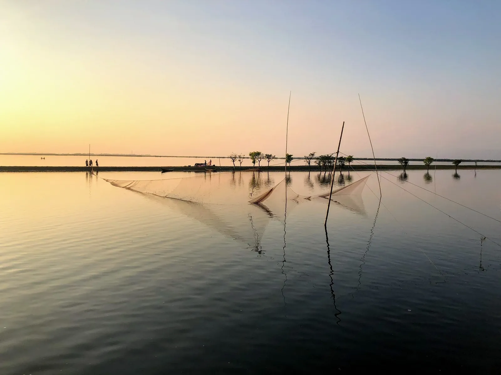

ホーム/私たちについて
私たちについて
バングラデシュと日本が、いっしょにつくる。
REVIVAL MADE は、バングラデシュの2つのつくり方を、海外のブランドやデザイナーに届けます。提携工場の生産力と、女性の職人たちの手の技です。

Revival のこと。
Revival は、バングラデシュと日本の取り組みです。女性の職人たちとともに、伝統の手仕事を収入につながる仕事にしてきました。
REVIVAL MADE は、その仕事を海外のブランドやデザイナーに開き、量産のための提携工場ラインを加えたものです。
役割
役割をはっきりと。